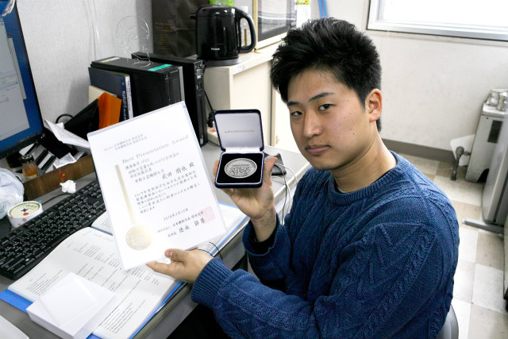
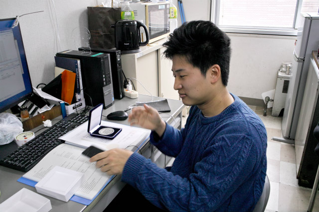
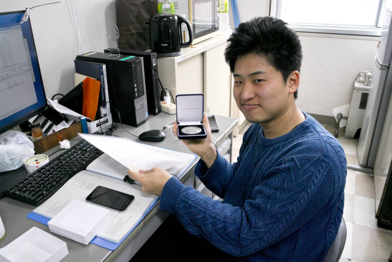
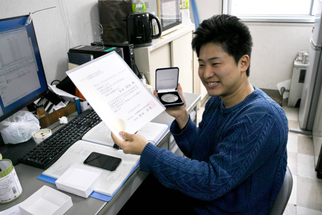
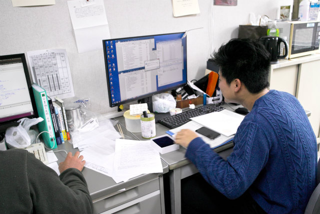
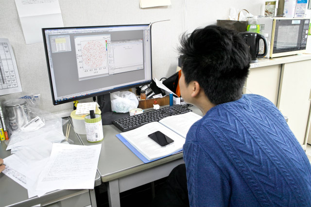

| ・ 武田くん，BPAの受賞(H30.03.10) | |||
3月に開催された日本機械学会 関西学生会平成29年度学生員卒業研究発表講演会で講演を行ったB4の武田くんが，去年に続いてBPAを受賞しました．題目は「回転不変量を用いたPTV計測法の測定性能改善」で受賞です．5年前にBPA受賞の平井くんのテーマの拡張版です．学内の練習以外でも地道に練習に加えて，質疑スライド準備をしていたのが良かったようです． |
|||
|

おめでとう |

賢そうな顔でお願いします | ||
|

・・・ |

やりずらい | ||
|

引継ぎ資料作成中 |

終わったら次年度計画立てます（フラグ | ||